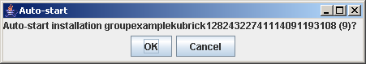
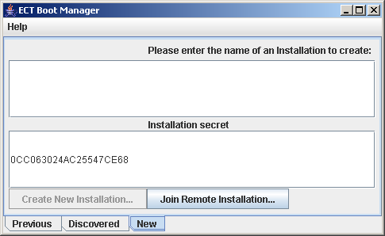
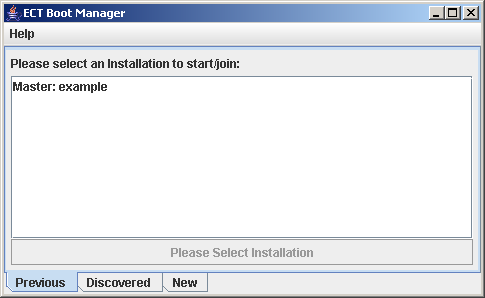
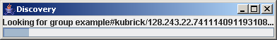
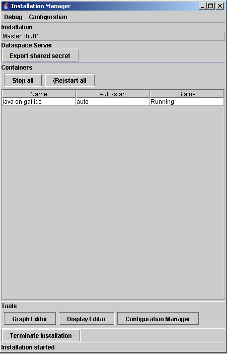
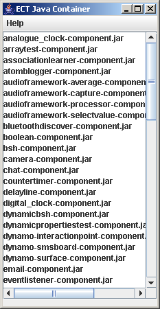
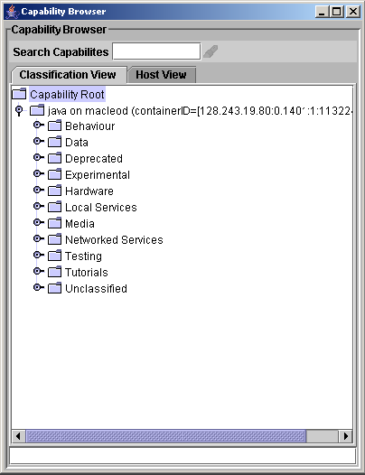
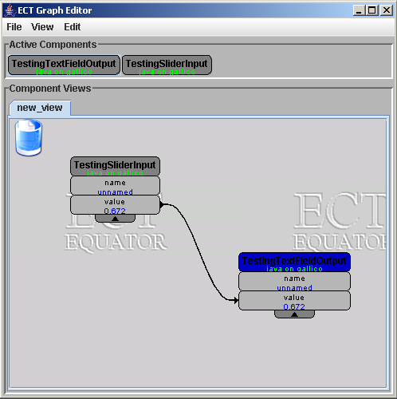
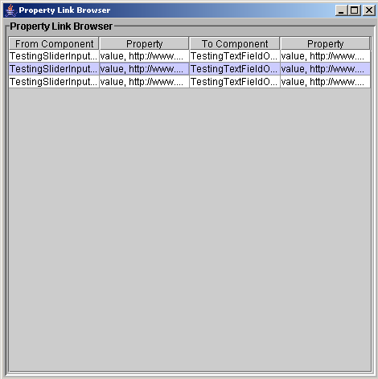
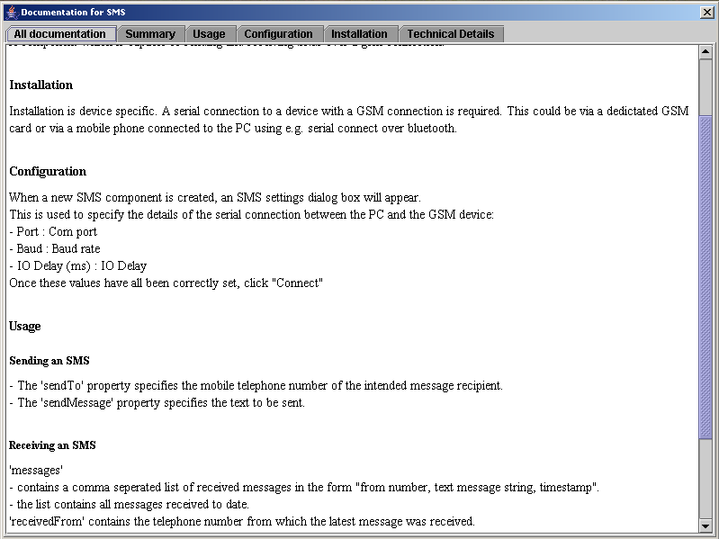

This document describes how to use the ECT graph editor and capability browser interface. It assumes that you have read the ECT overview which describes concepts necessary to understand this document. It also assumes that you have downloaded and installed at least the minimal version of ECT as described in the Getting Started guide, and have started it using method 1 as described in this guide. It assumes that you only wish to run ECT on one computer, which is called the installation master, rather than using a cluster of networked computers. If you do wish to use a cluster of computers, further tutorials will soon be available on this website which describe how to do this.
After having started ECT using the runWebstart.bat script, you will first have to decide whether to use an existing installation, if you have previously created one, or whether to create a new one.
If previous installations exists on your system, then on first launching ECT, a dialog will appear which gives you the option of launching the most recently used one. This dialog will look something like figure 1 below:
Clicking OK, or waiting for 10 seconds (see countdown timer on dialog, currently on 9) will cause the previous installation to which this refers to be re-created, including any components, connections and property values which it included. Alternatively, clicking Cancel will bring up another dialog, which allows you to choose the options of either starting any of the previous installations stored on this computer, joining another installation running on another machine in the cluster as an installation slave (not covered by this tutorial), or creating a new installation. This dialog will look something like figure 2 below, and is called the boot manager.
Clicking on the tab labelled Previous will reveal a list of previous installations, each identified by a name, as shown in figure 3 below:
Select one of these names in the list, and click on the Restart Installation button which will appear to restart this installation.
Alternatively, clicking on the tab labelled New will reveal functionality to create a new installation, as shown in figure 2 above. To create a new installation:
The process of creating a new installation is now complete, and the installation manager will now start.
The installation manager is the ECT graphical user interface (GUI) which will give you access to the ECT graph editor and capability browser. It will also allow you to control any ECT container running on your machine (or on other machines, if you are using ECT on a cluster of machines). Note that a container will be automatically started on your local machine when the installation manager is started, and will locate any components that are installed on your machine.
When the installation manager first starts up, it first performs some searches for other machines running ECT on your network. It will indicate that it is doing this by displaying the dialog box shown in figure 5 below.
This process takes about 30 seconds. If you only want to run ECT on one computer, then you can close this dialog by clicking on the cross in it's top right corner. Alternatively, just wait 30 seconds and it will close itself. In either case, the main installation manager screen should open, looking something like figure 6 below.
The installation manager will start by trying to install components that it finds available into your chosen installation. If you clicked OK in the dialog box shown in figure 4 above, then these components will be installed from your local machine, and this process should be very quick - only a few seconds for all of you components. As it installs components, it will show a progress bar for each. Once this process has finished, you should see the message Installation started appear at the bottom of the installation manager dialog.
The installation manager dialog contains quite a lot of features. You can perform the following operations using it:
There are also other operations that can be performed using the installation manager, but which are not covered by this tutorial.
Once the installation manager has finished creating an installation, you should see another window appear which is labelled ECT Java Container. This window represents the container which is running on your machine and providing access to any components stored there. It doesn't actually provide any useful features for normal ECT users - but if it disappears, then this indicates that there is a problem with your container, and you will have to try and restart it using the installation manager. If you are an ECT developer, then selecting the "Show Console" option from the "Help" menu will provide you with access to any information or error message produced by components running in the container - which can be useful in debugging components.
A screenshot of the ECT java container can be seen in figure 7 below.
Clicking the Graph Editor button will cause two new windows, labelled Graph Editor and Capability Browser to open. The Capability Browser allows a user to view which components are available to use in an installation (these component availability adverts are referred to as capabilities in ECT), and to request the creation of an instance of a component to be used in the graph editor. The Graph Editor can be used to view which instances of components that have been created, to examine which properties a component instance defines, and which values these properties have been set to, and to update these property values, if the component allows this for a particular property. It also allows connections to be established between component properties.
A screen shot of the capability browser is shown in figure 8 below. The capability browser currently provides two alternate views of available components. The first view, labelled the Classification View displays capabilities per container in a hierarchical structure according to a classification which a component defines for itself. The second view, the Host View, displays an simple list of components available per container, in alphabetical order.
Alternately, selecting the View Documentation option will allow you to vew any documentation defined by the component. See the Component documentation section of this website for more information about the format of documentation which is commonly used by ECT components.
Example UseSelect the component in the Capability Browser. Right click the component and select “Delete request” from the popup menu. This will delete the component and remove it from the Graph Editor’s component editing canvas.
Figure 9 below shows an example of the graph editor window, with the two components that you created above already added.
Newly-added components will appear in the top section of the graph editor, which is labelled Active components. Right-clicking on a component here will reveal a pop-up menu which allows
If you wish to remove a component from a view (perhaps to save space for other components) then drag the component over the trash can icon in the top left of the editor canvas. Please note that this will not actually delete the component - just remove it from the view.
Example Use
To update a value right click on the property of a component available on the Editor canvas and select “Examine value …” from the popup menu. Change the value as desired and click “Set”. Some properties are read only and therefore cannot be changed. If this is the case, there will be no “Set” button in the change value popup window.
Example Use
To create a connection between two component properties, click and hold the left mouse button over the desired source property. It should turn green. Whilst still holding the left mouse button, drag the mouse pointer to the desired sink component (which should also turn green) and let go of the mouse button. A connection should now have been created from the selected source to the selected sink. To delete this connection, right click on it, revealing a popup menu, and select the delete option. Note that read only properties cannot be the sink of a link. The Link Browser can be used to view all current links. See the “Link Browser” section for more details.
Example Use
Figure 10 below shows an screenshot of the link browser. To open this window, select the “View” option from the “Graph Component Editor” menu and click “Link browser”. A list of current links should appear.
Many component follow define documentation in a standard format. Attempting to view documentation in this format will reveal a browser window that looks something like figure 11 below.
This documentation window is divided into different tabs. The first tab, labelled All documentation, contains all of the documentation for this component, in a scrollable text box. Each of the other tabs will only contain a section of this document, and different sections are targetted at helping a user understnand a different aspect of the component's operations.
Creating instances of components, configuring their property values and establising connections between properties can take a long time, especially if you are creating an installation that involves a lot of components. Luckily, ECT provides a number of mechanisms by which a representation of a set of components and connections can be saved to disk and reinstated, which are described in the rest of this section.
The mechanism that ECT users are most likely to make use of is called persistency, and it operates in the background whilst you are creating an installation. What this means is that if you add a component, or modify a property, or establish or break a linkage, then all of these changes are recorded to storage implicity, without any action required of a user. If you terminate an installation and restart it (using the "terminate installation" button on the installation manager, and functionality provided by the boot manager respectively) then any components, property values and linkages will be recreated automatically, as they were when you terminated the installation. The persistency mechanism should also work if your installation is terminated accidentally, eg by a power cut or similar, but in this case you may lose a very few of the most recent changes.
However, sometimes you may wish to take a snapshot of a particular installation - to return to at a later date, for example, or to send to another ECT user to try out. You can do this by using the "Save current components and linkages" option on the "View" menu in the graph editor, which allows you to save component instances, property values and linkages to a file in storage. You can then load this file in from storage using the "Load components and linkages" option on the same menu.